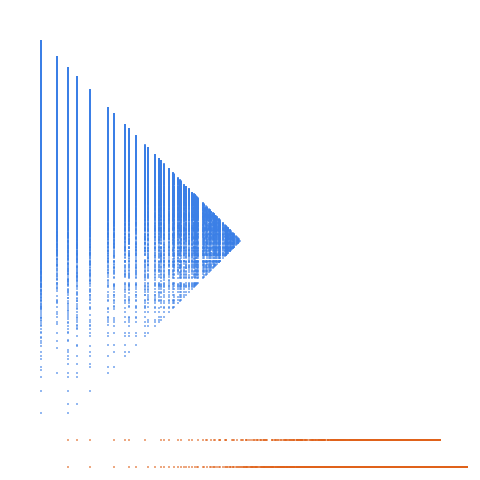

The composite numbers: numbers n of the form x*y for x > 1 and y > 1

Open in the 3-D viewerA002808 on the OEIS
| Terms | 100,000 (n = 1 … 100,000) |
|---|---|
| Decomposable (a > 2d) | 99,999 |
| Level class, k > L | 10,575 · 10.58 % |
| Weight class, k ≤ L | 89,424 · 89.42 % |
| Ties, k = L | 66 |
| On the level line L = 1 | 9,164 |
| Forced level, l ≤ d² | 1 |
| Range of a(n) | 4 … 110,487 |
| Range of the jump d | 1 … 2 |
| Largest weight k, level L | 110,479, 55,243 |
Composites: gaps of 1, and 2 across each prime. The naturals' plane, thinned: 10.58 % level against 9.59 %.
The decomposition
Every term of a strictly increasing sequence is written a(n) = k(n)·L(n) + d(n): the jump d = a(n+1) − a(n), the weight k the least divisor of a − d greater than d, the level L = (a − d)/k. A term decomposes when a > 2d; it is in the level class when k > L and in the weight class when k ≤ L. See decompwlj.com and arXiv:0711.0865, or how it works, with worked examples and a live one.